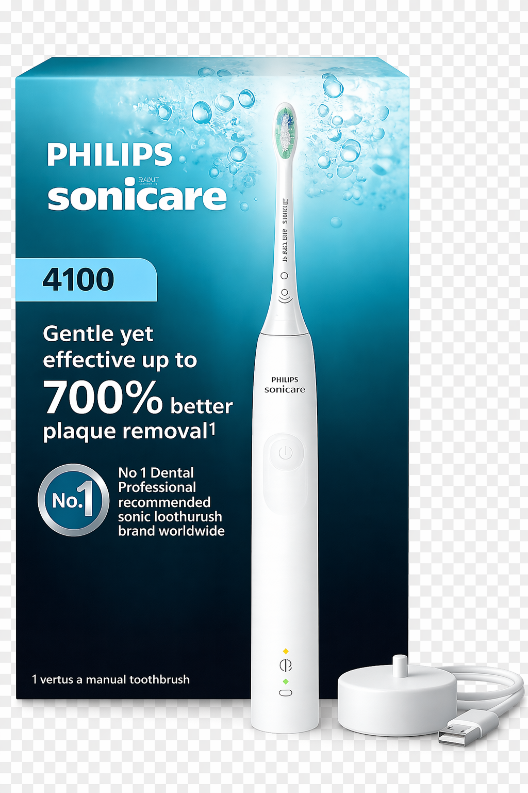

Stop researching. Get the right answer for your situation.

Philips Sonicare 4100 SeriesBest for most adults who want cleaner daily brushing without paying for premium features they will not use.
Decision Snapshot
Why this decision holds up
Replacement heads cost $8–$12 each. Over 3 years, you'll spend more on heads than the brush itself.
First-time electric toothbrush buyers who want a proven, dentist-recommended model
Adults brushing 2x daily who want consistent cleaning without learning new habits
Anyone coming off a manual brush — the 4100 is the most forgiving upgrade
Travelers — the 2-week battery life and USB-free USB compatibility reduce friction
Buyers who don't want app-connected gimmicks or subscription-based replacement heads
Buying the $250 flagship with pressure sensors, Bluetooth, and UV sanitizers — most of it goes unused
Grabbing a rotating-oscillating brush (Oral-B style) without knowing you'll prefer sonic vibration
Choosing based on battery life alone — a 2-week battery is plenty unless you genuinely travel 3+ weeks
Skipping the pressure sensor — not having one is the #1 regret among former hard-brushers
Assuming the cheapest Sonicare is equivalent; the 1100 lacks the 2-minute timer that builds the habit
Premium electric brushes don't clean substantially better than mid-range ones. The 4100 already delivers 95% of the flagship performance.
App-connected brushes don't change long-term habits. Owners stop checking the app within 3 weeks, per multiple long-term surveys.
UV sanitizers and self-cleaning heads don't meaningfully affect oral hygiene outcomes. They add cost, not results.
Replacement heads are where manufacturers make their margin. Sonicare and Oral-B heads are almost interchangeable in performance — brand-specific compatibility is the only real constraint.
These are the models most buyers compare first — and the specific reason they still make less sense as the default choice for most households.
Best for most adults who want cleaner daily brushing without paying for premium features they will not use.
Check current price →Opens retailer — pricing may vary
| Alternative | Better fit if you… | Why it's not the default |
|---|---|---|
Oral-B Pro 1000 | Rotating-oscillating preference | A better fit for a specific preference, but not the safest default for most people. |
Philips Sonicare 9900 Prestige | Premium feature-seekers | Costs more without enough real-world upside for most buyers. |
Quip Electric Brush | Aesthetic, travel-focused | A better fit for a specific preference, but not the safest default for most people. |
For 90% of adults, yes. The 4100 provides sonic action, a 2-minute timer, and a 2-week battery. Premium models add pressure sensors and app tracking — nice to have, not required.
The brush handle holds a charge for ~14 days of twice-daily use. The internal battery is not user-replaceable and typically lasts 3–5 years before capacity drops noticeably.
Yes, consistently — especially for plaque removal and gum-line cleaning. Clinical studies show 15–20% better plaque reduction compared to manual brushing for the average user.
You can. Third-party heads run $2–$4 each vs. $8–$12 for genuine Sonicare heads. Performance is generally comparable, though bristle durability varies by brand.
If you've ever been told you brush too hard, yes. The 4100 doesn't have one — the 5100 or higher models do. For most adults who've already adjusted their technique, it's optional.
For most people, the Philips Sonicare 4100 Series is still the electric toothbrush that makes the most sense. Check live pricing if it fits your situation.
Check price ↗As an Amazon Associate we earn from qualifying purchases. See our affiliate disclosure.